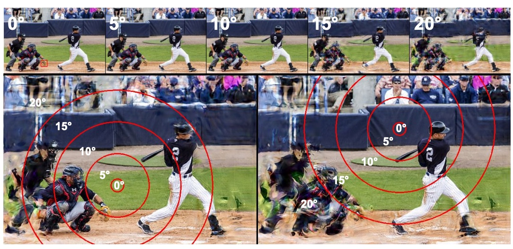

|
Anne Harrington I'm CTO and Co-founder of Yoku AI, a start-up building healthcare and emotional communication tools. Using my background in computer vision and visual perception, I am leading the development of a robust stress and emotion detection app. Check out Yoku AI's pitch from MIT's delta v accelerator here! I did my undergrad and a master's at MIT, receiving a joint degree in Computer Science and Neuroscience (6-9). I am fortunate to have been advised by Ruth Rosenholtz and Bill Freeman in CSAIL. Previously, I was an undergradute at the Center for Brains, Minds, and Machines and the Media Lab.
|

|

ResearchI want to improve computer vision and machine learning systems by understanding human perception. My interests include robustness, interpretability, computer graphics, and peripheral vision. For my MEng thesis, I explored representational stability and peripheral vision in deep neural networks. As an undergradute, I worked on texture representations as a biological motivation for adversarial robustness. |
|
COCO-Periph: Bridging the Gap Between Human and Machine Perception in the Periphery
Anne Harrington, Vasha DuTell, Mark Hamilton, Ayush Tewari, Simon Stent, William T. Freeman, Ruth Rosenholtz In submission Periphery vision dataset to evalaute and train deep neural networks. |
Object Detection in Deep Neural Networks Differs from Humans in the Periphery
Anne Harrington, Vasha DuTell, Mark Hamilton, Ayush Tewari, Simon Stent, William T. Freeman, Ruth Rosenholtz ATTRIB @ NeurIPS, 2023 Psychophysics testing object detection in humans and deep neural networks. |
 |
Evaluating Peripheral Vision as an Input Transformation to Understand Object Detection Model Behavior
Anne Harrington, Vasha DuTell, Mark Hamilton, Ayush Tewari, Simon Stent, William T. Freeman, Ruth Rosenholtz Gaze Meets ML @ NeurIPS, 2023 Data augmentation to simulate perpiheral vision in deep neural networks. |
|
StatTexNet: Evaluating the Importance of Statistical Parameters for Pyramid-Based Texture and Peripheral Vision Models
Christian Koevesdi, Vasha DuTell, Anne Harrington, Mark Hamilton, William T. Freeman, Ruth Rosenholtz Gaze Meets ML @ NeurIPS, 2023 Contrastive learning framework to select the most and least important statistics for pyramid-based texture models. |
Exploring perceptual straightness in learned visual representations
Anne Harrington, Vasha DuTell, Ayush Tewari, Mark Hamilton, Simon Stent, Ruth Rosenholtz, William T. Freeman ICLR, 2023 Temporal stability is task dependent and improves with certain types of adversarial robustness. |
Exploring the perceptual straightness of adversarially robust and biologically-inspired visual representations
Anne Harrington, Vasha DuTell, Ayush Tewari, Mark Hamilton, Simon Stent, Ruth Rosenholtz, William T. Freeman SVRHM @ NeurIPS, 2022 Robust models tend to have more temporally stable representations like humans. |
Finding Biological Plausibility for Adversarially Robust Features via Metameric Tasks
Anne Harrington & Arturo Deza ICLR spotlight, 2022 Adversarially robust features resemble texture representations in peripheral vision. |
Finding Biological Plausibility for Adversarially Robust Features via Metameric Tasks
Anne Harrington & Arturo Deza SVRHM @ NeurIPS, 2021 Workshop version of ICLR paper. |
Interspecies interactions mediated by technology: An avian case study at the zoo
Rébecca Kleinberger, Anne Harrington, Lydia Yu, Akito van Troyer, David Su, Janet Barker, Gabriel Miller CHI, 2020 Interactive music device provides sonic enrichment for a macaw. |
|
Forked from Jon Barron's website source code. |